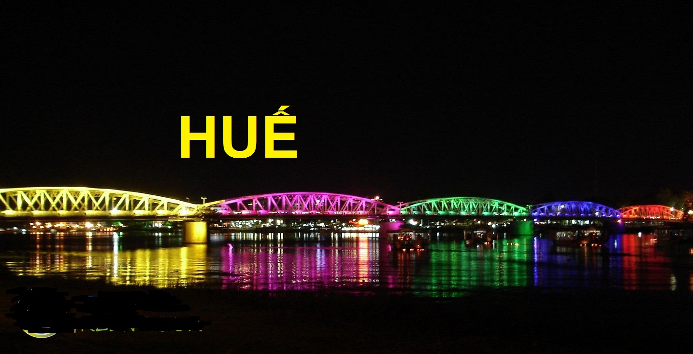
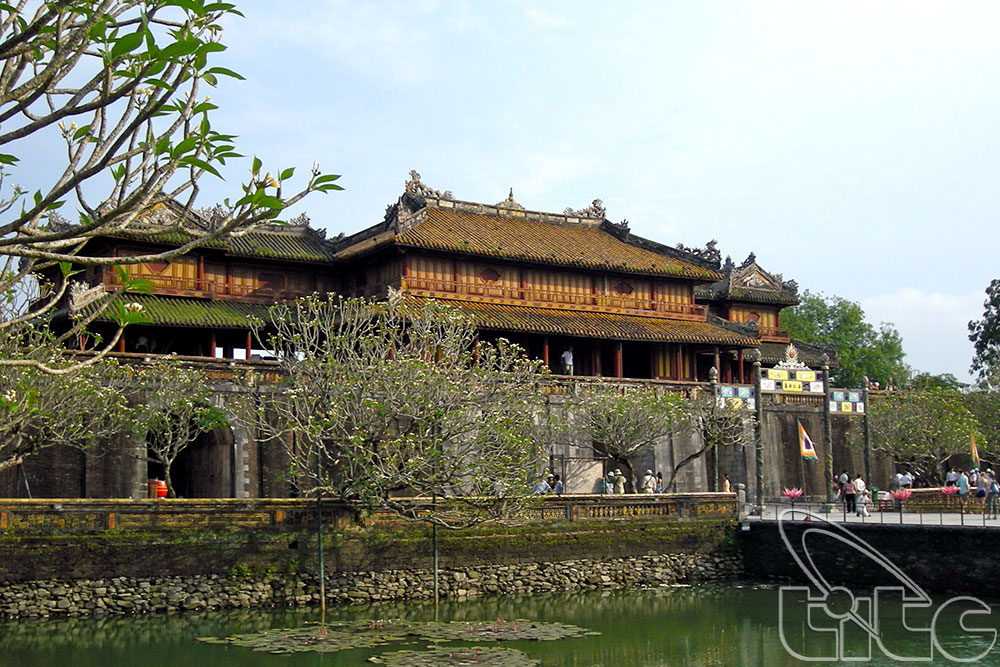

Nằm ở dải đất hẹp của miền Trung Việt Nam, đa dạng về cảnh quan thiên nhiên và có bề dày truyền thống lịch sử- văn hoá, Huế thật sự là một thành phố đẹp và là nơi lý tưởng để du lịch.
Ngày nay, Huế được biết đến là thành phố Festival của Việt Nam, lần đầu tổ chức vào năm 2000 và hai năm tổ chức một lần. Thành phố Huế có cả vùng gò đồi và vùng đồng bằng.
Cách biển Thuận An 12km, cách sân bay Phú Bài 18km, cách cảng nước sâu Chân Mây 50km, nằm trên trục giao thông quốc lộ 1A, có tuyến đường sắt Bắc - Nam; là trung tâm khoa học kỹ thuật và đào tạo của miền Trung,
trung tâm văn hoá du lịch Việt Nam, đặc biệt Huế có dòng sông Hương đi qua giữa

thành phố và nhiều sông nhỏ: An Cựu, An Hoà, Bạch Đằng, Bạch Yến tạo ra sự hấp dẫn của thiên nhiên. Sông Hương – núi Ngự được coi là biểu tượng cho thiên nhiên thơ mộng xứ Huế. Bên cạnh đó, tiềm năng nổi bật của Huế còn được thể hiện trong 300 công trình kiến trúc nghệ thuật được UNESCO công nhận là di sản văn hoá nhân loại vào năm 1993. Đó là, hệ thống thành quách, cung điện, lăng tẩm của các vua nhà Nguyễn, các kiến trúc cung đình, kiến trúc dân gian, chùa chiền, miếu mạo, phủ đệ, hệ thống nhà vườn... Tháng 11/2003, chương trình biểu diễn Nhã nhạc cung đình Huế được công nhận là di sản văn hóa phi vật thể thế giới, góp phần đem lại niềm tự hào cho người dân xứ Huế. Với di sản văn hoá thế giới, với cảnh quan thiên nhiên, với nhiều di tích lịch sử, các sản phẩm đặc sản, nhất là nhà vườn là một nét độc đáo tiêu biểu của Huế như: nhà vườn An Hiên, Lạc Tịnh Viên, nhà vườn Ngọc Sơn Công Chúa, Tỳ Bà Trang, Tịnh Gia Viên... cùng với hệ thống khách sạn, nhà hàng, các dịch vụ phục vụ khác, thành phố đã và đang trở thành một trung tâm du lịch rất hấp dẫn khách du lịch đến Huế. Với năng lực đón khách có 3 khách sạn 5 sao, 7 khách sạn 4 sao, 5 khách sạn 3 sao và nhiều khách sạn đạt 1-2 sao. Có các tuyến du lịch như: khu văn hoá du lịch Kim Long, Nam Châu Hội Quán, phố cổ Gia Hội - Chi Lăng, phố đêm Bạch Đằng, Hàn Thuyên; nghe ca Huế trên sông Hương, đi thuyền dọc sông Hương, sông Ngự Hà. Thưởng thức các món ăn đặc sản truyền thống rất phong phú, đa dạng, mang đậm đặc trưng của Huế như bánh bèo, nậm lọc, bánh khoái, thanh trà, tôm chua, mè xửng, cùng với các sản phẩm mỹ nghệ lưu niệm theo dấu ấn của lịch sử.